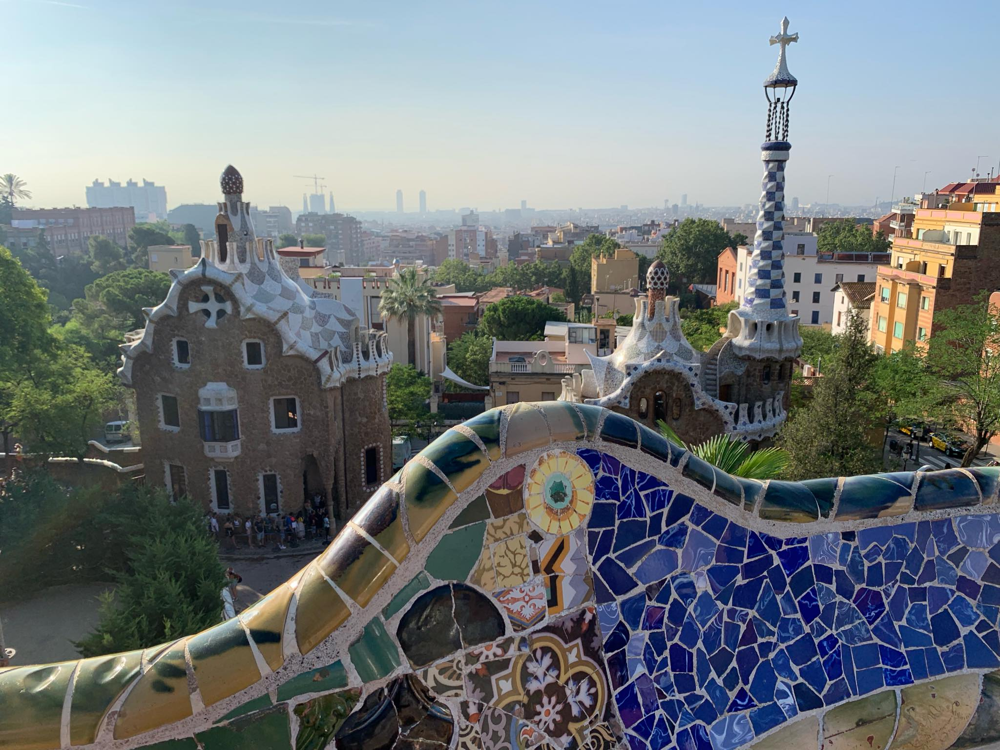

Jeśli kiedykolwiek mogę liczyć na brak nudy, to tyko w wakacje! Zawsze odwiedzam nowe miejsca, spotykam się z kumplami, bawię się w najlepsze... A w tym roku miałem okazję spędzić miło czas w dwóch miejscach - jednym mniej, drugim bardziej znanym.
Obozy letnie w ośrodku Proem Zako są dla mnie coroczną tradycją, ale w tym roku odbyły się nieco inaczej. Pierwszy tydzień spędziłęm na szczególnym Obozie Pięciu Kultur. Jak nazwa wskazuje, obozowicze byli reprezentantami kultury polskiej, amerykańskiej, arabskiej, izraelskiej i romskiej. Na początku stresowałem się trochę, ale po pewnym czasie zakumplowałem się z niektórymi :). Drugi obóz, Fishart, był trochę mniej ekscytujący ale nadal ciekawy. Zrobiłem nawet kilka plakatów na warsztacie grafiki cyfrowej, ale nie mogę znaleźć plików...
Drugi wyjazd był dla mnie większą niecodziennością. Wyjechaliśmy z tatą i wujkiem do hiszpańskiej Barcelony na tydzień! Odwiedziliśmy wiele znanych atrakcji jak Sagrada Familia, Camp Nou czy plaża La Barceloneta! Nazwiedzaliśmy się trochę za dużo jak na mój gust (odwiedziliśmy większość budynków Gaudiego w kilka dni) ale wiele się dowiedziałem i nabrałem większego doświadczenia!
© Jakub Kaczmarek 2019